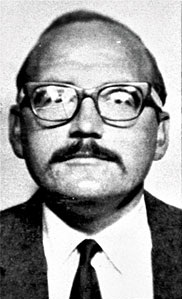
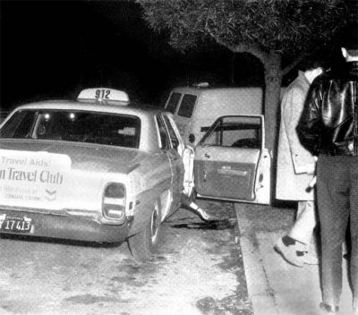
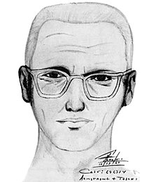

The police had responded to a call from a motorist claiming they had seen two lifeless bodies on the side of the road. As they arrived at the scene‚ they discovered the bodies of 17 year–old David Faraday and 16 year–old Betty Lou Jensen. Faraday had been shot in the head once and died within minutes but Jensen had been shot five times in the back and died immediately. Surprisingly‚ Faraday had still been breathing when the police arrived. That day‚ the couple went out on their first date together. They were last known to be at a high school’s pre–Christmas Concert. They had apparently planned to go to a diner nearby after the concert but it is unconfirmed if they went to it or not. It is only known that afterwards‚ the couple had pulled up in a known Lovers’ Lane by Lake Herman Road in the late evening. It is believed that the Zodiac Killer had pulled up beside their car and shot multiple warning shots into it to force them out due to bullet holes found in the car’s roof and back window and witness testimonies. Jensen got out of the car first and when Faraday started to get out of the car‚ the killer shot him in the head. Jensen‚ horrified‚ tried to run but was shot down and died. Faraday died on arrival at a nearby hospital and Jensen was declared dead on the scene. In this case‚ a .22–caliber semi automatic pistol was used with the same ammunition used in the Santa Barbara Attack‚ Winchester Western Super X copper–coated long rifle. This was the first confirmed Zodiac Killer case and there was more to come.
On this chilling day‚ the police received a phone call from a payphone that was ten minutes away from the crime scene. The caller told the police‚ “I wish to report a double murder. If you will go one mile east... on Columbus Parkway to a public park‚ you will find the kids in a brown car. They have been shot by a 9–millimeter Luger. I also killed those kids last year.... Good–bye.” and hung up. In this call‚ he reported his newest murder and admitted to committing the Lake Herman Murders. The police rushed to the said area but found that the parking lot was only 2 miles east of the payphone not 1 mile east. In the brown vehicle‚ they found the kids he mentioned but both were still alive when cops arrived. 22 year–old Darlene Ferrin was found in the front seat disabled and on her last breath. In the back of the car‚ they found Michael Mageau still fighting for his life. Ferrin had taken five shots and Mageau had taken four shot. Darlene died on arrival at a nearby hospital but Mageau had survived. At this point in time‚ the Zodiac Killer didn’t have the name‚ the Zodiac Killer‚ and he had just admitted to two murders. After finding out the new evidence of this new murderer on the loose‚ the police asked Mageau about the events that happened that night and the killer’s appearance. That night‚ Ferrin had picked up Mageau and drove them to the parking lot. A car pulled up in the parking spot beside them and the driver came out with a high–powered flashlight. All of a sudden‚ the driver started firing shots at them. He shot at the car five times before retreating to his own car. Mageau climbed into the back of the car to hide but Ferrin was unable to move. Apparently‚ Mageau let out some sort of scream which brought the killer’s attention back to their car. He returned and shot two more shots into both Ferrin and Mageau before driving away. Mageau’s scream made the killer have to come closer to the car and this allowed Mageau to see him properly. Mageau described the killer to be a white man who was about 5’8” or 5’9” in height‚ around his 20s or 30s‚ had a stocky build and light brown curly hair. After this it is speculated by the police‚ that the killer drove to the payphone and made the call to the police but the payphone was only ten minutes away. It took him 40 minutes before he got to the payphone. It is unknown what he was doing during this period of time. During the end of July‚ the Zodiac Killer sent three different ciphered letters to three different newspaper organizations in San Francisco. These letters held details of the Lake Herman Murders and the Blue Rock Springs Attack that only the killer could know. This case was the start of many‚ many mocking and terrifying letters along with phone calls from the alleged Zodiac Killer.
“I want to report a murder‚ no‚ a double murder. They are two miles north of Park Headquarters. They were in a white Volkswagen Karmann Ghia. I’m the one that did it.” The police rushed to the scene and once again found that they were actually 0.7 miles north not 2 miles north‚ another miscalculated distance. There they found 22 year–old Cecelia Shepard and 20 year–old Bryan Hartnell. They had broken free from their restraints and had been waiting for an hour for help. Shepard was found stabbed ten times while Hartnell had been stabbed six times. They were rushed to a nearby hospital but Shepard died within 48 hours of the stabbing. Hartnell had surprisingly survived and was the last victim to have survived a Zodiac attack. According to Hartnell‚ the couple had been relaxing on a blanket in the area when Shepard saw an oddly dressed man holding a gun starting to approach them. He was described as having a heavy build‚ being at least 5’10” in height‚ having a weight of at least 210 pounds and being anywhere from 35 to 45 years of age. The man claimed to be a prison escapee and demanded some money and car to get away with‚ threatening them with his gun. Hartnell offered his wallet and car keys but the man strangely didn’t take them. After talking with the man for several minutes‚ the man started to tie them up with a plastic clothesline and proceeded to stab them with a 12–inch knife until they passed out. Once finished‚ the killer walked away from the scene. After a few minutes‚ a nearby fisherman heard the couple screaming for help and alerted park rangers. It took the ambulance almost an hour before they could tend to them and after an hour‚ the murderer had been at the payphone in which he made the mocking call to the police. On arrival‚ the police found the victims and that Hartell’s car had been written on with the dates of the Lake Herman Murders‚ the Blue Rocks Spring Attack and the current attack with the time it took place along with a cross–circle symbol‚ a symbol that would soon become a representation for the Zodiac Killer. After inspecting the crime scene‚ they found tire tracks indicating that he had pulled up behind Hartell’s car and footprints leading the police to his approximate weight and shoe size. Other policemen had tracked the killer’s phone call and obtained the killer’s fingerprints. Three women that were in the area in the time of the killing said that they noticed an unusual man in the area a few hours before the attack. At this time‚ the police released a sketch of the killer using the three womens’ descriptions but no further evidence or witnesses came up.
The victim was 29 year–old Paul Stine‚ a cab driver in San Francisco. Three siblings had witnessed a part of the murder and called the police. Police had arrived when the killer was still at the scene. The killer wrote in a letter saying‚ “2 cops pulled a goof about 3 minutes after I left the cab.” The three siblings had seen the cab parked outside their house with its interior light left on. Upon closer inspection‚ they realized that the driver had his head in the lap of his passenger. They saw the glint of a knife and blood and assumed that the passenger was stabbing the driver but it was found later on that he was actually cutting off a piece of Paul Stine’s shirt. Two of the teenagers ran downstairs to have better vision of the scene while the other went to call the police. They watched as the man got out the car and walked to the driver’s and to try to position the driver upright. Once done‚ he got a handkerchief out of his pocket and started wiping down the door of the car. As soon as he finished‚ he began to walk North down to Cherry Street. One of the teens ran out the door and followed the man to find out where he walked towards. At this moment‚ the police had arrived and began to question the teens. As the teen tried to tell them which way the killer went‚ they repeatedly questioned him and by the time they realized what he was trying to say‚ they could see no sign of the killer anywhere. As radios broadcasted the description of the man‚ they had made a huge mistake. They mistakenly described the man as a black man instead of a white man. When police scouring the area found a white man with the same description‚ they dismissed him as he wasn’t black. The police and the teenagers’ descriptions were almost the same as earlier cases but he wore glasses this case. The Zodiac Killer also claimed in his bus bomb letter that he had spoken with one of the officers when he was leaving. This left police baffled and they had once again failed to capture the Zodiac Killer. When police examined the crime scene‚ they found that he was killed using a 9mm semi–automatic pistol‚ a piece of Stine’s shirt had been cut off and Stine’s wallet and keys had been stolen. It was believed that this case was actually a failed robbery but on October 13‚ 1969‚ police had received a letter from the killer with the missing piece of Paul Stine’s shirt. The letter was signed by the Zodiac Killer. Another police sketch was made for this case using the teenager’s descriptions and was later modified by request from witnesses.
  Return to the top of the page.
© 2018 Evelyn Louie. All Rights Reserved.